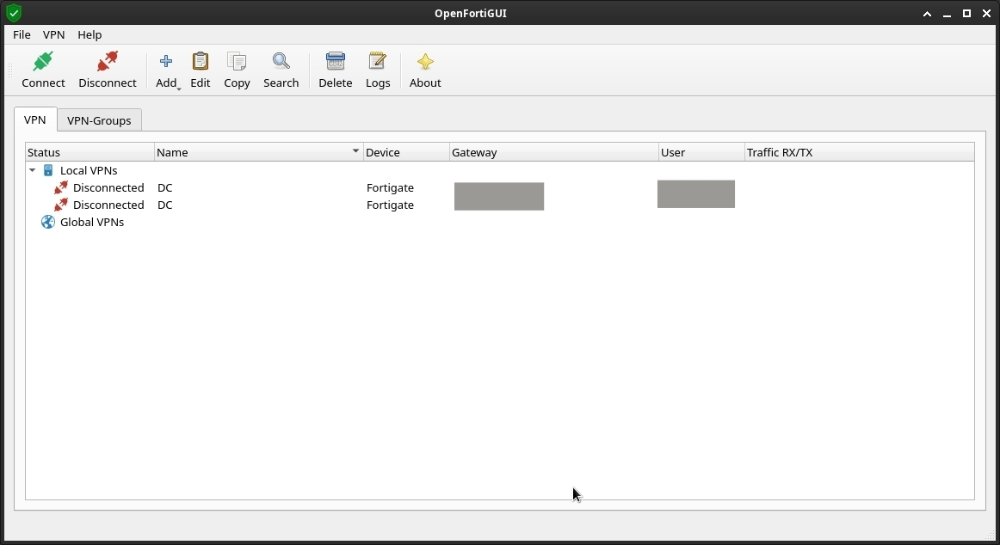

Install OpenFortiGUI on Debian 12/13 - Bookworm/Trixie
This is how to setup OpenFortiGUI on Debian 12/13 - Bookworm/Trixie.
OpenFortiGUI uses the openfortivpn project.
OpenFortiGUI is still not in Debian or Ubuntu, but someone did open a ITP for it: #888518
Install
Fetch the GPG key
curl -fsSL https://apt.iteas.at/iteas-keyring.gpg -o ./iteas-keyring.gpg
gpg --no-default-keyring --keyring ./iteas-keyring.gpg --armor --export BA662621DA69F38C443F147C23CAE45582EB0928 | sudo gpg --dearmor -o /etc/apt/trusted.gpg.d/iteas-keyring.gpg
rm ./iteas-keyring.gpg
Add sources file
Create a file at /etc/apt/sources.list.d/openfortigui.list and put the following contents:
Check on https://apt.iteas.at/iteas/dists/ if you find your dist.
I did open an issue to ask for Debian trixie to be added: theinvisible/openfortigui#189.
deb [signed-by=/etc/apt/trusted.gpg.d/iteas-keyring.gpg] https://apt.iteas.at/iteas bookworm main
Install it
sudo apt update
apt policy openfortigui
sudo apt install openfortigui
# Or (for me)
sudo apt install openfortigui -t bookworm
For Debian 13 "Trixie"
You will need to edit the PPP options in /etc/ppp/options:
Uncomment:
ipcp-accept-localipcp-accept-remote
See: https://github.com/adrienverge/openfortivpn/issues/1076#issuecomment-2156366824
Screenshots
On 2023-02-13 I followed this and it installed: 0.9.8

And on 2025-05-30 I installed the version 0.9.10 using Debian 13.